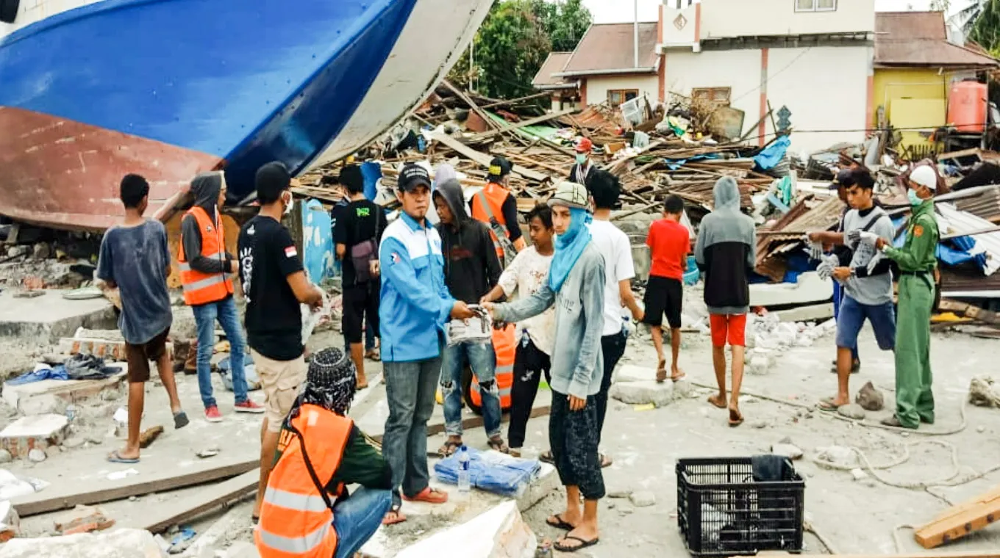
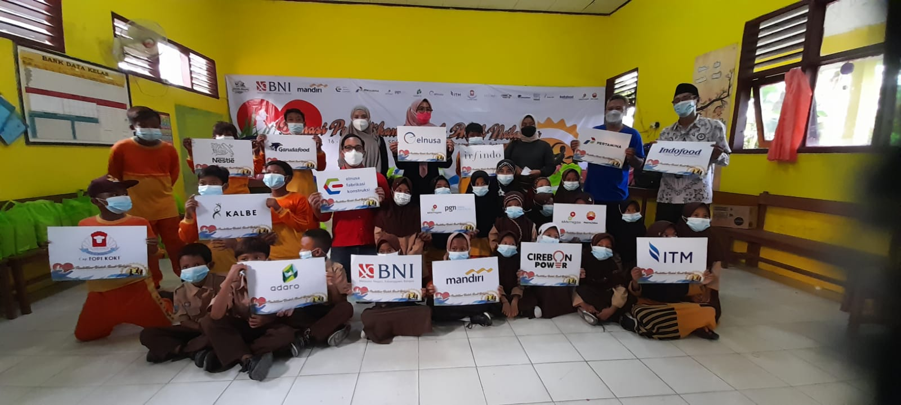
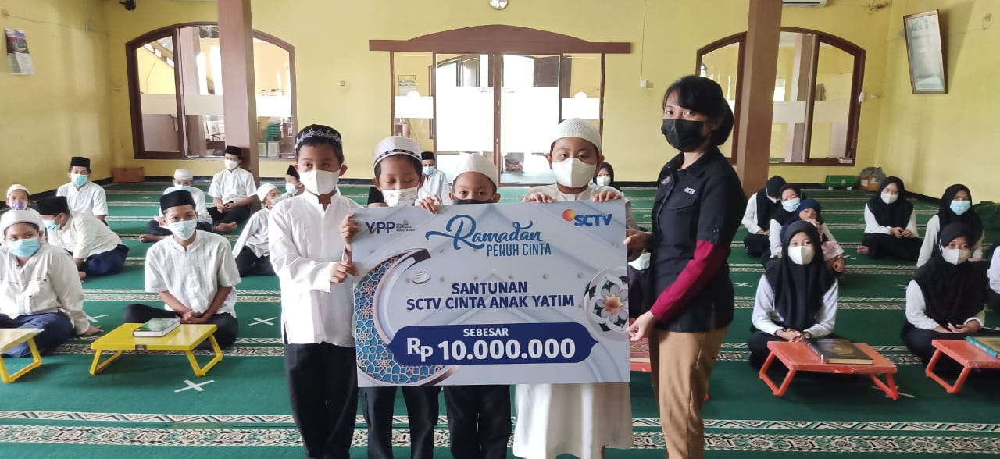
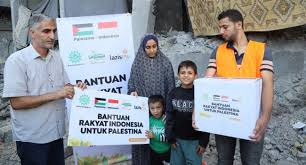
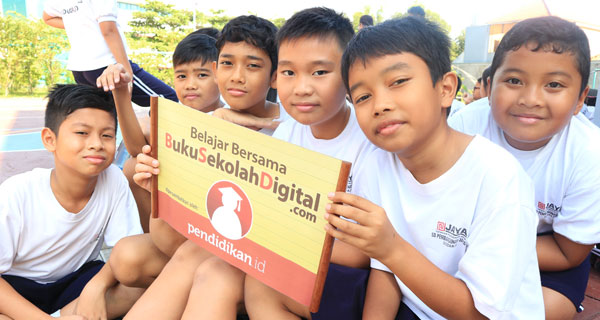
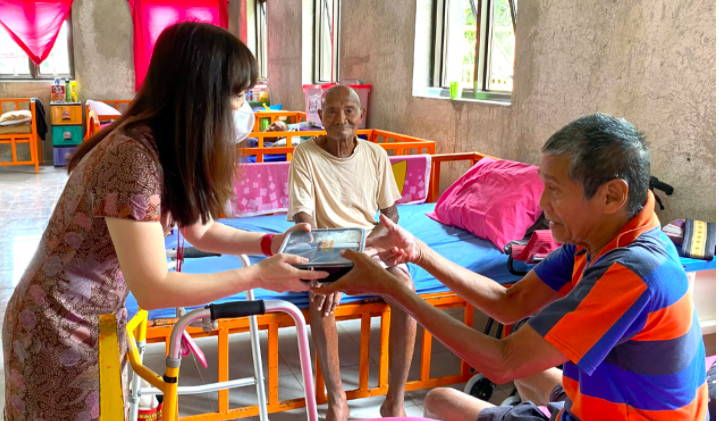
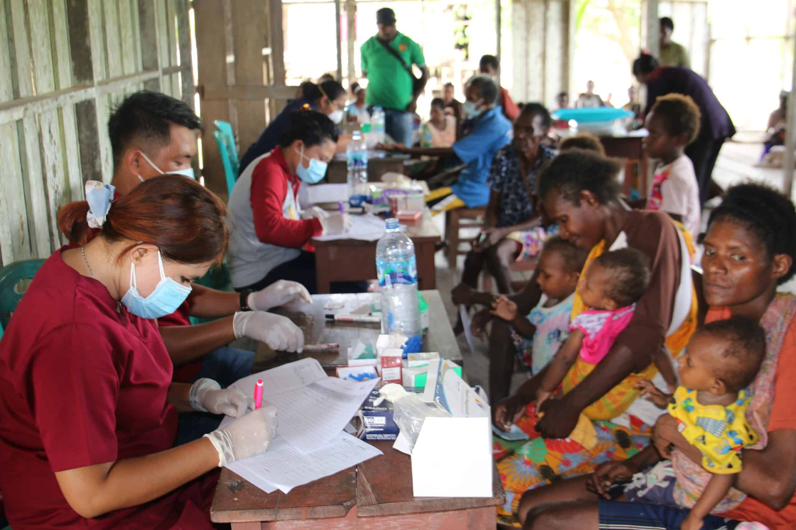

Donation aid to Palu residents affected by the earthquake

Educational assistance for fishermen's children in Bantul

Orphan and half-brother assistance in the orphan and half-brother love program

Donate to care for Palestine

Sharing charity with the elderly in need during the pandemic

Support for education in remote areas of Indonesia

Sharing happiness with the elderly ahead of Christmas

Medical check-up with Papuan residents